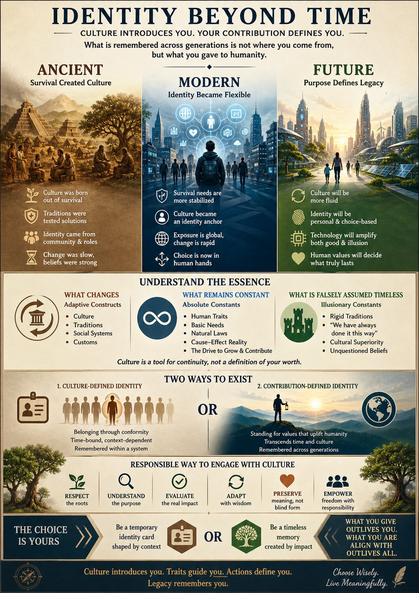

Transcending adaptive constructs to reach human constants.
The Reality of Constructs
Culture and traditions were never permanent truths. They were adaptive constructs created to enable survival and provide continuity. In the modern era, survival is relatively stabilized, meaning culture is no longer a requirement—it is a choice.
Two Ways to Exist
| Path 1: Construct-Defined | Path 2: Contribution-Defined |
|---|---|
| Derived from inherited traditions and systems. | Built through original actions and insights. |
| Remains time-bound and context-bound. | Potential to transcend generations. |
| Provides belonging through forms. | Provides legacy through human constants. |
The Filter of Legacy
WE understand that what survives time is not ritual or language, but insight into human nature and actions that improved well-being.
What Changes
- Social Systems
- Traditions
- Cultural Forms
What Remains
- Natural Laws
- Human Traits (Empathy, Curiosity)
- Cause-Effect Reality
The Responsible Approach
Culture is neither to be blindly worshipped nor rejected. A responsible human uses it as a starting point, not a boundary.
"Respect culture. But don’t stop at it."